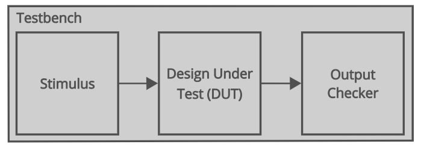

Practice
Source
Tutorial
Complete Verilog tutorials for beginners - FPGA Tutorial
A complete set of Verilog tutorials for beginners that covers every aspect of the Verilog language with examples.

https://blog.csdn.net/wuzhikaidetb/article/details/130048032?csdn_share_tail=%7B%22type%22%3A%22blog%22%2C%22rType%22%3A%22article%22%2C%22rId%22%3A%22130048032%22%2C%22source%22%3A%22wuzhikaidetb%22%7D
 https://drive.google.com/drive/folders/1iDr_KK_gItxQwiKSBzsgqAHMwli7_tLz
https://drive.google.com/drive/folders/1iDr_KK_gItxQwiKSBzsgqAHMwli7_tLz https://github.com/ivylingchiang/NTHU_HardwareDesign
https://github.com/ivylingchiang/NTHU_HardwareDesign
Outline
This note only contains assignments and selected lab code for practice. Other related files will be provided on GitHub if needed.
Lab
Lab 1
Introduction
| Spec source : GitHub/Lab1/Spec
| Testbench sample : Verilog Tutorial, Testbench 的撰寫技巧, Testbench 介紹, 實驗報告
Recap
Testbench
- Input port: register
- Output port: ware

Timescale and Delay


Timescale
`timescale {time_unit}/ {time_precision} Thetimescaledirective instructs EDA tools on how to interpret time units. For instance, a setting of1ns / 10psdefines 1ns as the time unit (for delays) and 10ps as the time precision, which determines the resolution for observing the circuit's behavior.
NOTE
- In Verilog, the time unit and precision must be specified using a power-of-ten scale—specifically 1, 10, or 100. Valid time measurements include s, ms, us, ns, ps, and fs.
- Furthermore, the precision must always be equal to or smaller than the time unit to ensure simulation accuracy.
- The simulation time is rounded based on the specified time precision. If a delay value is not a multiple of the precision, the EDA tool will round it to the nearest precision unit. For example, with a precision of 1ns, a delay of 1.4ns would be rounded to 1ns, while 1.6ns would become 2ns.
Delay
parameter delay = n;
#delayIn a testbench, delays define the sequence of events. They act as timing triggers that instruct EDA tools exactly when to initiate or transition specific signals, allowing for a structured simulation of input stimuli.
// Regular Delay
#<delay> <LHS> = <RHS>
// Intra-assignment Delay
<LHS> = #<delay> <RHS>Regular Delay (#delay LHS = RHS) suspends the process before evaluating the RHS, which is ideal for sequencing test stimulus. Conversely, Intra-assignment Delay (LHS = #delay RHS) captures the RHS value immediately but defers the assignment, effectively modeling the propagation delay of physical gates.
Cycle
always #(CYC/2) clk = ~clk; Vivado Tutorial
Trace Code
Submit Files
Practice 1
Introduction
Trace Code
Submit Files
Lab 2
Introduction
Trace Code
Submit Files
Lab 3
Introduction
Trace Code
Submit Files
Lab 4
Introduction
Trace Code
Submit Files
Lab 5
Introduction
Trace Code
Submit Files
Lab 6
Introduction
Trace Code
Submit Files
Assignment
Advance 1
Introduction
Trace Code
Submit Files
Advance 2
Introduction
Trace Code
Submit Files
Advance 3
Introduction
Trace Code
Submit Files
Advance 4
Introduction
Trace Code
Submit Files
Advance 5
Introduction
Trace Code
Submit Files